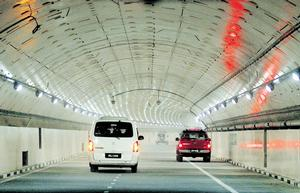

SMART Tunnel
Stormwater Management and Road Tunnel
Useful Information
| Location: | Kuala Lumpur City. |
| Open: | not yet open [2007] |
| Fee: | not yet open [2007] |
| Classification: |
 Tunnel
Water Supply Tunnel
Water Supply
|
| Light: | electric |
| Dimension: | |
| Guided tours: | |
| Photography: | |
| Accessibility: | |
| Bibliography: | |
| Address: | SMART Tunnel, Tel: +60-, Fax: +60-, |
| As far as we know this information was accurate when it was published (see years in brackets), but may have changed since then. Please check rates and details directly with the companies in question if you need more recent info. |
|
History
| 2003 | work on the tunnel started. |
| 14-MAY-2007 | tunnel opened to the public. |
Description
|  |
| Image: SMART Tunnel during a test on 29 January 2007. Source: Berita Harian (public domain). |
Kuala Lumpur is a rather famous city, as it is mentioned in many geography books and atlases. The reason is, it has a typical equatorial climate. One problem with this type of climate are frequent and heavy rains, called monsoon. Additionally Kuala Lumpur is a huge city with continually growing individual transport problems. The solution to both problems, or at least a partly solution, is called SMART.
The name SMART Tunnel is an abbreviation of Stormwater Management and Road Tunnel. The name tells us the specialty of this tunnel: it is both, a road tunnel and a drainage tunnel at the same time. Or better, hopefully not at the same time. During heavy rains the tunnel will be closed for traffic and reused as a drainage tunnel. This is the first time those two purposes were combined.
The whole tunnel is 9.7km long and built for flood water, but a center piece of 3km length across Kuala Lumpur's commercial district is combined with a roadway. The roadway is a rather rare double deck construction, one level for each direction. But to be exact, the tunnel has three levels, the lowest level is for the drainage. Only during monsson, when the amount of rain water increases drastically, the other two levels of the tunnel will be closed for the traffic and used for water too. With a diameter of 13.2m the tunnel will be the biggest storm water tunnel in Southeast Asia and the second biggest in Asia.
The tunnel was built jointly by the private companies MMC Bhd. and Gamuda Bhd.. The cost were 1.9 billion ringgit (USD 543 million; EUR 396 million). They have a 40-year concession to collect tolls, but the rate has not been set by the government, except for the first month, which is free.
 Search Google for "SMART Tunnel"
Search Google for "SMART Tunnel" Google Earth Placemark
Google Earth Placemark SMART Tunnel - Wikipedia
SMART Tunnel - Wikipedia Stormwater Management And Road Tunnel (SMART) Project,
official website.
Stormwater Management And Road Tunnel (SMART) Project,
official website.